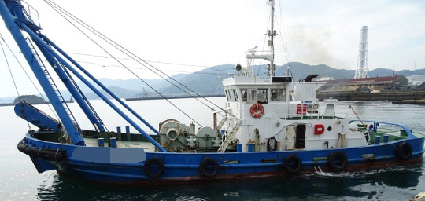

1,000 BHP 66 GRT AHTS Tug Blt 1996 Jp
/ informed by BNC SHIPBROKING CO., LTD.
(18-619)

- TYPE : ANCHOR HANDLING / TOWING / SUPPLY VESSEL
- BUILT : FEB., 1996, HONGAWARA ZOSEN CO LTD., JAPAN
- FLAG/CLASS : JAPAN / JG
- LOA/L/B/D : 23.5 / 22.01 / 7.80 / 2.30 M
- GRT/draft : 66 T / 1.9 M
- MAIN ENGINE : YANMAR 6W165-EN, 500 PS X 1,200 RPM X 2set (TTL. 1,000 PS)
- AUX ENGINE : YANMAR 4CHL-N, 50 PS X 1,800 RPM X 2set
- GENERATOR : TAIYO 4CHL-N, 50 PS X 1,800 RPM X 2set
- PROPELLER : FPP X 2set
- SPEED : 9.78 kt
- ASCHE : 20.6 T
- CREW : 3 P (IN CASE SMOOTH SEA, PLUS 9 PASSENGERS, TOTAL 12 P)
- NEXT SS : MARCH 2019
- LOCATION : LAID UP AT PORT YANAI, HIROSHIMA, JAPAN AS OF MAY 2018
Information History
- 180809 : She is available for sale.